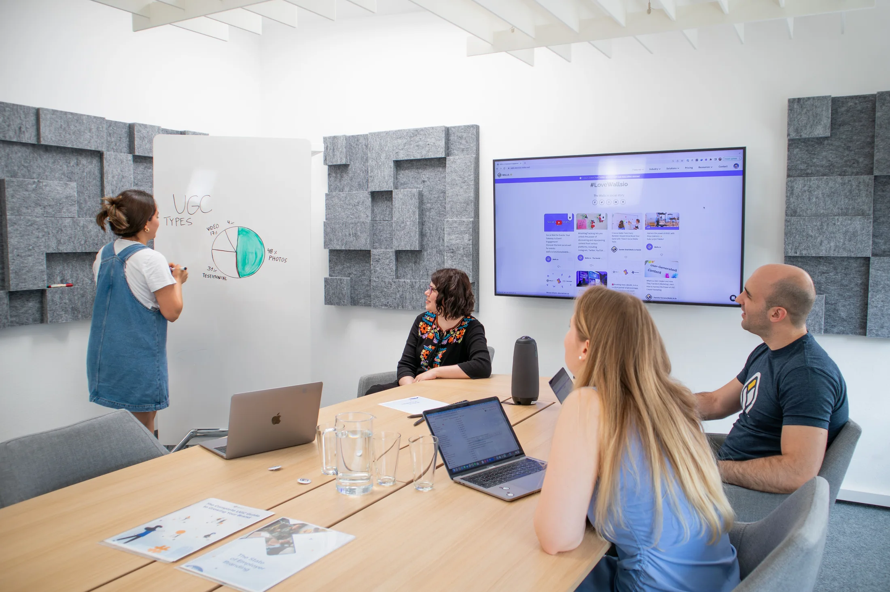

Traffic without
a landing decision.
More visits make the same uncertainty more expensive.
Attention is the start, not the strategy.
PAYOFF connects strategy, creative, acquisition and conversion—so every next move has a better chance of paying for itself.
GOOD WORK
SHOULD SHOW ITS WORK.
PROOF SLOTS / EDIT BEFORE LAUNCH
A channel can be working. The system can still be leaking.
More visits make the same uncertainty more expensive.
A launch is not a lesson until the next brief changes.
Activity reports cannot tell you what deserves another dollar.
When the first order is the last, paid growth has a ceiling.
THE NUMBER AFTER THE CLICK
The promise, the offer, the page, the follow-up and the second purchase are one commercial conversation. Treat them as separate channels and you pay for the gaps.
See the full handoffCAPABILITIES, CONNECTED
We start with the constraint, then bring in the capability that can actually move it. No channel for channel’s sake.
What: Business, customer and channel diagnosis translated into a focused growth plan.
Why: A clear constraint keeps teams from mistaking more activity for progress.
Outcome: Priorities connected to revenue, margin and the next measurable decision.
What: Channel planning, campaign structure, audience testing and ongoing optimization.
Why: Efficient scale depends on matching the message, market and economics.
Outcome: More qualified demand at an acquisition cost the business can support.
What: Audience insight, message architecture, testing briefs and creative direction.
Why: The ad is often the first conversion decision—not decoration around it.
Outcome: A stronger signal from each impression and a useful next brief.
What: A repeatable way to plan, make and distribute content across the journey.
Why: Publishing volume without distribution or intent rarely compounds.
Outcome: More consistent demand creation and a library that improves future work.
What: Message-matched page strategy, copy and conversion-led design.
Why: Every extra point of friction taxes the demand you already paid to earn.
Outcome: More of the right visitors become qualified conversations or customers.
What: Research, prioritization and testing across key conversion moments.
Why: Better conversion improves the return from the traffic already in motion.
Outcome: A clearer path to action and a growing record of what persuades.
What: Journey design, lead nurturing, email and lifecycle communication.
Why: Not every good prospect is ready on the first visit.
Outcome: Fewer lost handoffs and more demand converting on a useful timeline.
What: Retention journeys, measurement design, attribution and reporting.
Why: Acquisition becomes more durable when the value after conversion is understood.
Outcome: Better visibility into lifetime value, channel contribution and where to reinvest.
THE WORK BEFORE THE AD
Audience, offer and economics shape the creative before it reaches the market. Then evidence improves the next brief.
SCOPE IS SET BY THE CONSTRAINT, NOT A PREPACKAGED RETAINER.
PLACEHOLDER PROOF / REPLACE BEFORE LAUNCH
qualified pipeline lift
Illustrative placeholder · verify sourceblended return on ad spend
Illustrative placeholder · verify sourcelower cost per acquisition
Illustrative placeholder · verify sourcerevenue influenced
Illustrative placeholder · verify source[CLIENT / INDUSTRY]
Illustrative case-study format. Replace each field with an approved, evidence-backed client story before launch.
THREE DIFFERENT CONSTRAINTS
These are replaceable case-study formats—not claimed client wins. Add approved work, source notes and outcomes before launch.

02 / DEMAND / DECISIONA REPEATABLE WAY THROUGH
The work moves from the real constraint to evidence we can use. The next decision is part of the first one.
Look at demand, conversion, contribution and customer value together.
Pick the decision with the clearest potential to change the economics.
Align the promise, creative, offer, page and follow-up around one intent.
Launch with a specific hypothesis and enough signal to learn.
Separate channel activity from qualified demand and business value.
Carry the learning into the next brief, budget and customer moment.
Every loop should buy us a better next question.
ONE CUSTOMER. MANY HANDOFFS.
Marketing is not a collection of isolated outputs. It is a sequence of decisions that earns the next decision.
Creative strategy
Content · Distribution
Paid media
Audience · Offer
Landing pages
Funnels · CRO
Email · Lifecycle
Customer experience
Repeat purchase
Referral · LTV
A SMALLER DISTANCE FROM THINKING TO DOING
The people framing the growth problem stay connected to the decisions, creative and learning that follow.
We treat the idea as a performance variable—then use evidence to make the next one stronger.
Fast experimentation is useful when each test has a reason, a readout and a decision attached.
Reach and clicks are context. Qualified demand, cost, contribution and retention are the conversation.
A TEST IS ONLY USEFUL IF THE NEXT DECISION CHANGES
The loop makes learning visible. Each cycle should narrow uncertainty, not manufacture activity.
Messaging / Creative / Audience / Offers / Landing pages / Funnel steps
ILLUSTRATIVE METHOD / ADD APPROVED EXPERIMENT EXAMPLES IF AVAILABLE
PLACEHOLDER / REPLACE WITH APPROVED WORDING
[Insert an approved client quote here.]
[Name]
[Role] · [Company]
[Optional verified outcome]
YOU SHOULD KNOW WHAT HAPPENS NEXT
Working cadence shown here is a suggested operating model. Confirm the exact deliverables and service levels before launch.
What moved, what stalled, what needs a decision.
A short, shared readout.Review tests, audience response and the next useful brief.
A decision, not just a deck.Connect channel learning to pipeline, economics and priorities.
A plan for the next cycle.One view of agreed measures, definitions and open questions.
No black box.CADENCE / ALIGN TO THE ACTUAL ENGAGEMENT BEFORE LAUNCH
SMALL ENOUGH TO STAY CLOSE
Replace this profile with the real lead: the experience, specialty and point of view that make them useful to the business—not a résumé wall.
PORTRAIT + CREDENTIALS REQUIRE APPROVED REAL MATERIAL
A STRAIGHT ANSWER HELPS EVERYONE
LIKELY A GOOD FIT
PROBABLY NOT
BEFORE WE TALK
Timing depends on scope, access and the current work already in motion. We’ll confirm a realistic start date after the first conversation—no date is promised here.
We’re most useful when a business has proven demand and enough signal to make a meaningful growth decision. The right scope depends on your business model and current constraint, not a label or arbitrary revenue tier.
Creative strategy and direction are part of the way we connect audience, message and performance. Production formats and execution are scoped against the work required.
Engagement terms are agreed before work begins. Confirm the actual term, notice period and scope in the proposal; none are implied by this page.
We align on definitions first, then connect channel activity to the measures the business cares about. The suggested cadence is a weekly performance snapshot, a biweekly experiment review and a monthly strategic review.
That depends on the scope and the handoffs required. If your team is involved, we’ll define owners, approvals and working cadence during scoping, then confirm whether the requested collaboration model fits before a proposal.
We establish the business baseline, customer economics, access and measurement definitions; identify the highest-value constraint; then agree the first plan and decision cadence.
Against agreed business outcomes—not a universal scorecard. Depending on the model, that may include qualified pipeline, acquisition efficiency, conversion, contribution or retention. The measure and source are agreed before results are claimed.
NO DECK BEFORE THE DIAGNOSIS
30 minutes. No generic sales deck. We identify where growth is currently leaking.
Book a Growth Strategy CallREPLACE THIS PLACEHOLDER WITH A VERIFIED BOOKING URL.